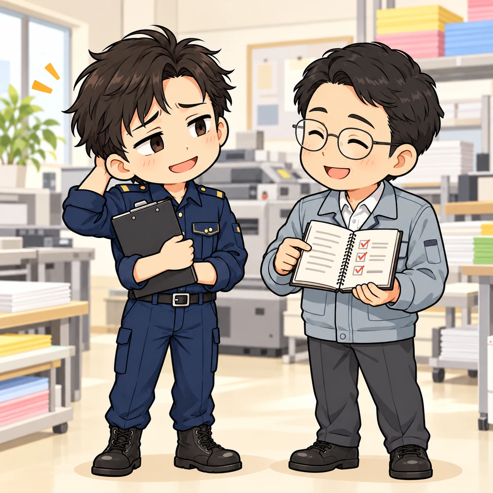
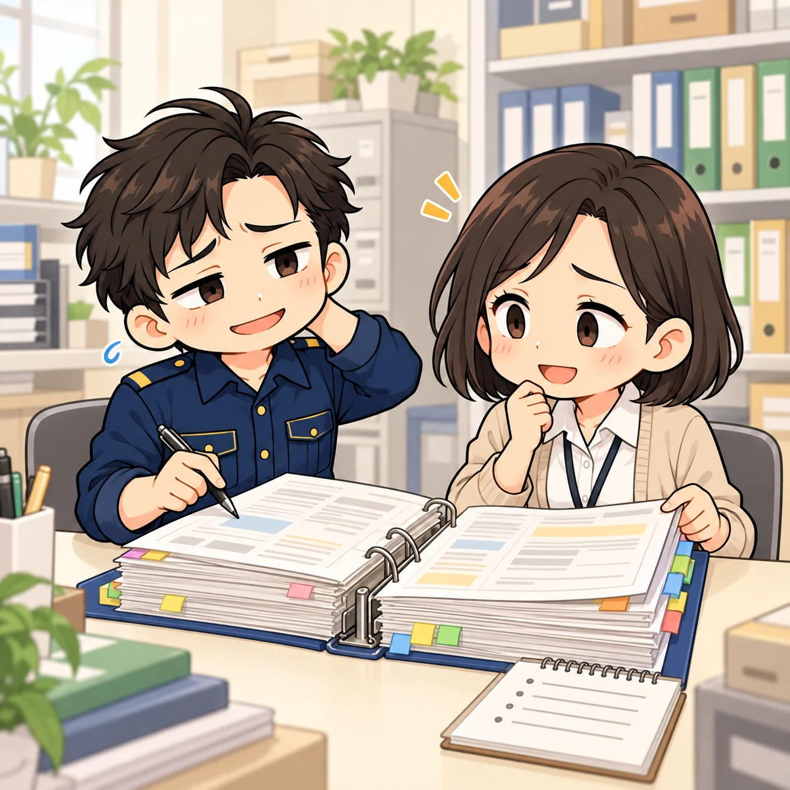
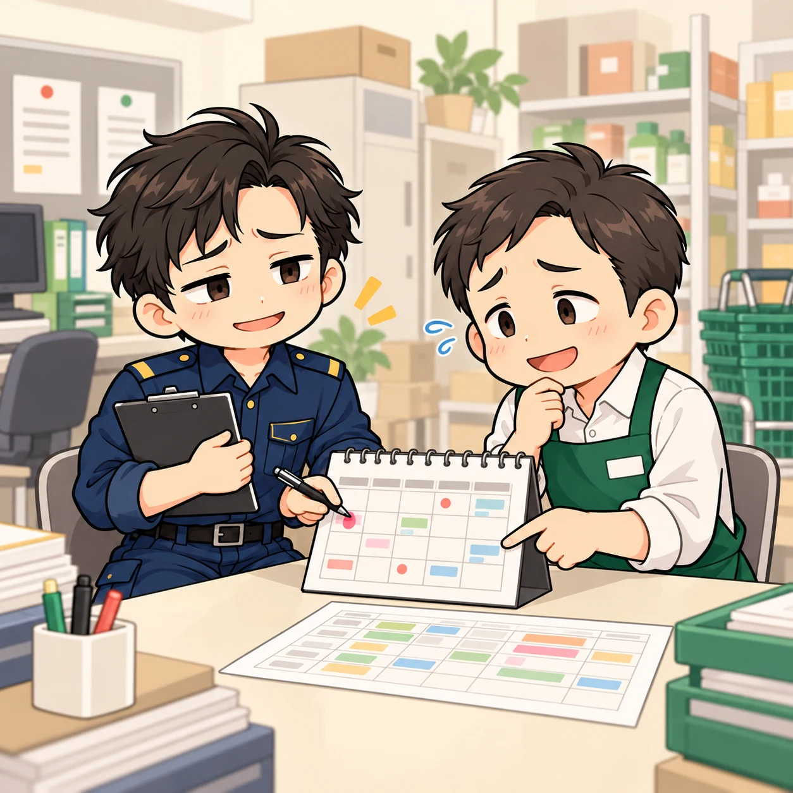
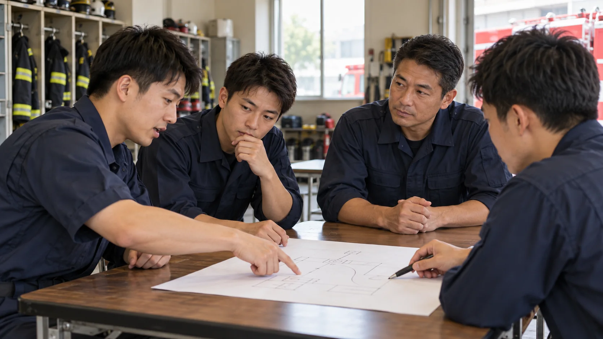

119LAB.NET / ARTICLES
最新記事
現場の声から、新しい技術、消防の科学まで。
消防の今と未来を考える記事をお届けします。
記事サンプルについて：119TECH・119VOICEは架空の事例を含むサンプルです。119SCIENCEは公開研究報告を整理した文献レビューの公開前原稿です。

予防課員のボヤキ｜何もなかった、と言われましても
「何も起きていない」の中にある、職場の小さな気配り。印刷会社への訪問から、予防の仕事の手応えを見つめる。
予防課員のボヤキ｜消防署に電話するのは、少し勇気がいるらしい
「こんなことを聞いてもいいですか」。電話の向こうの緊張から、自分のいつもの受け答えを見直す。

予防課員のボヤキ｜引き継いだのは、ファイルだけ
分厚いファイルと、新しい担当者。一緒に書類を確かめるうち、自分の「伝えたつもり」にも気づく。

予防課員のボヤキ｜訓練より、日程調整が難しい
スーパーの従業員向け消防訓練は、日程調整からひと苦労。

予防課員のボヤキ｜その荷物、そこじゃないんです
予防課員のボヤキ第1話。仕事の片隅にある、小さなボヤキとちょっとした変化。

経験を伝えるだけでなく、考える力を育てる
田中英樹著『消防士のリーダーシップと流儀119選』を読んで考えた、小隊長の在り方。
消防DXは「使い続ける仕組み」から
タブレットや電子地図を現場で活用するための視点。

放水戦術を科学する
火災性状と注水方法が消火効果に及ぼす影響を考える。

若手消防士5人に聞いた本音
リアルな悩みと、未来への希望に耳を傾ける。

救急DXで搬送時間を短縮
救急の現場を変えるデジタル技術に注目。
ある消防士が大事にしていること
最新記事｜受け取ったものを、次へ
消防の仕事で大切にしたいことを、短いエピソードと一つの言葉で綴ります。

わたしは救急資器材
最新記事｜観察・測定に用いる機器
測定条件、機器の点検・保守、記録と使い分けを紹介します。